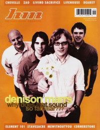

CMnexus
:
Contemporary Christian culture, music, and media.
Magazines
Profiles
Dove Awards
cmnexus.org
CM
nexus
→
Profiles
→
D
→
Jason E Dodd
Jason E Dodd
Writing Credits: 2 of 2
< -- Previous
Next -- >
1
2
Writing credits listing
Jan 2002 in
HM
#93
Hardnews:
The Wednesdays
Society's Finest
-
The Difference Between Us, vol. 1
Hopesfall
-
No Wings To Speak Of
Honey
-
Three
Charity Empressa
-
Charity Empressa
Mar 2002 in
HM
#94
"The Album That Sat For Six Months"
Grace for the Fallen
XdiscipleX AD
-
Doxology
May 2002 in
HM
#95
"Turn That House Down"
The Normals
Pillar
Bob Dylan
-
Love and Theft
Jul 2002 in
HM
#96
"It Was Once Understood"
The Blamed
MeWithoutYou
-
[A→B] Life
Cub Country
-
High Uinta High
Avalon
-
O2: Avalon Remixed
LN
-
Novel
Joy Electric
-
Starcadia
The Rocking Horse Winner
-
Horizon
7 Angels 7 Plagues
-
Jhazmyne's Lullaby

Sep 2002 in
HM
#97
Denison Marrs
"Victory's Newfound Glory"
Dead to Fall
"The Final Interview?"
Zao
Suffering & The Hideous Thieves
,
Rocky Votolato
-
Split
Mulchmen
-
Louder Than Dirt, Thicker Than Mud
System Failure
-
Home Theatres
The Halo Friendlies
-
Get Real
My Spacecoaster
-
EP2
Bullsheet
#7
Social Blast
#26
The Megazeen
#1
2003 in
Cornerstone
32.124
Starflyer 59
-
Old
May 2004 in
HM
#107
"Vision In Analog: The Story of Ronnie Martin"
Joy Electric
,
Ronnie Martin
Jul 2004 in
HM
#108
Brother Danielson
Writing Credits: 2 of 2
< -- Previous
Next -- >
1
2
CMnexus
(noun)
The magazine index
of modern music
and Christianity
© 2011 CMnexus. Last updated April 2021.
Contact:
Rants and other correspondence to:
editor -AT- cmnexus
-DØT- org
About